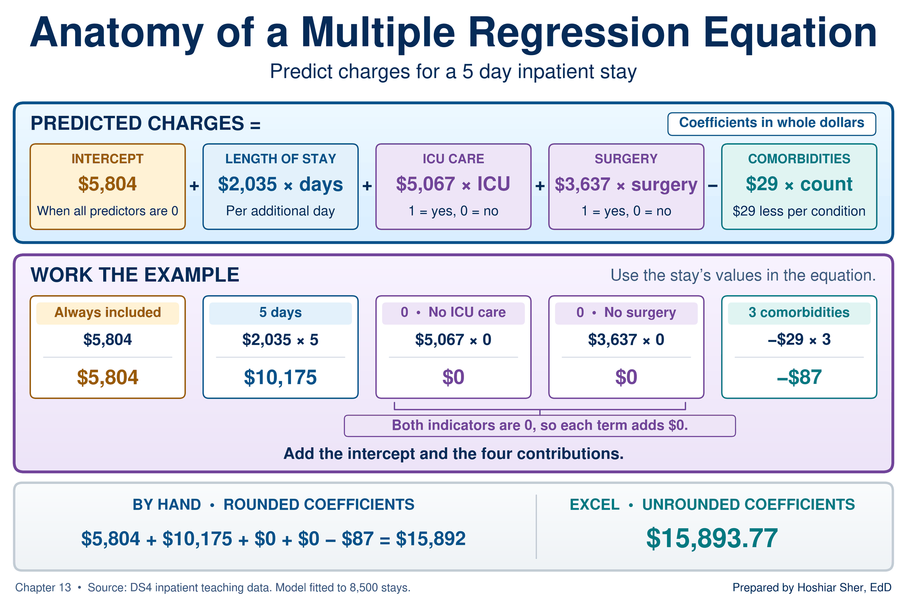
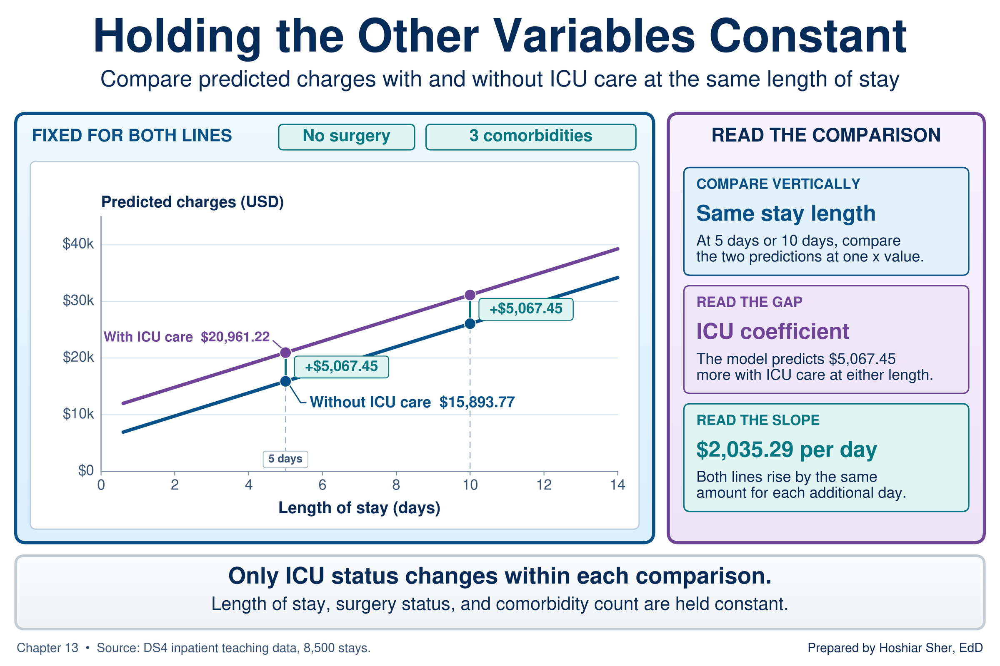
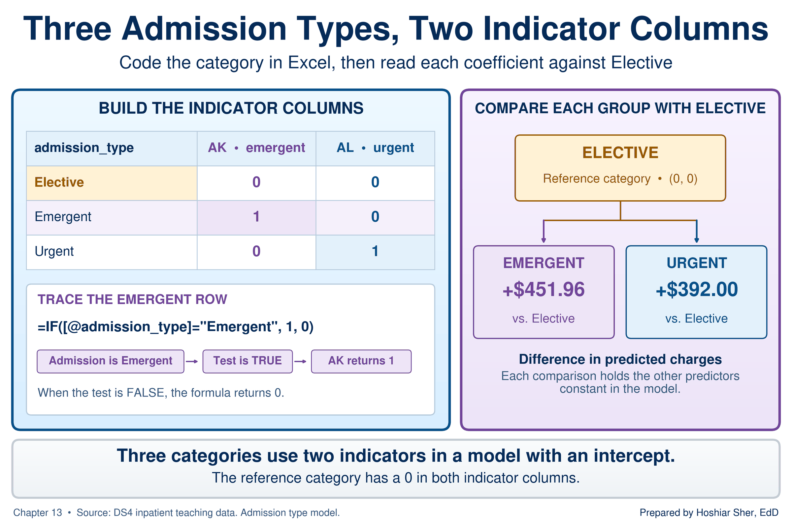
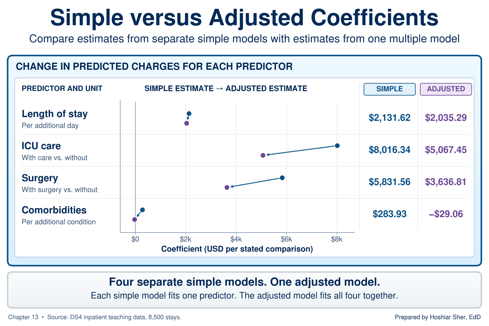
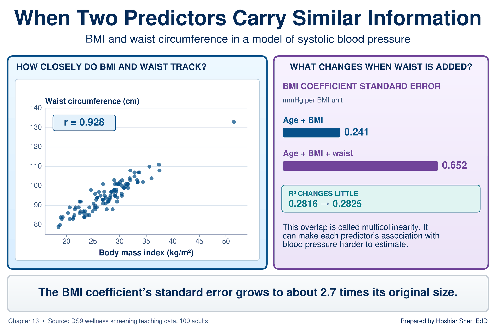
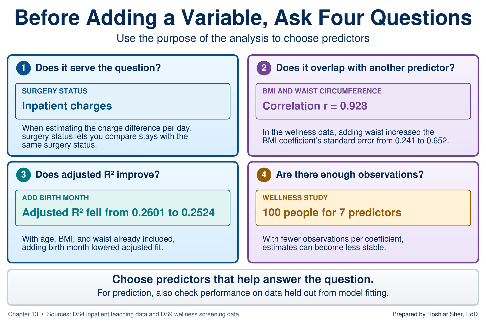
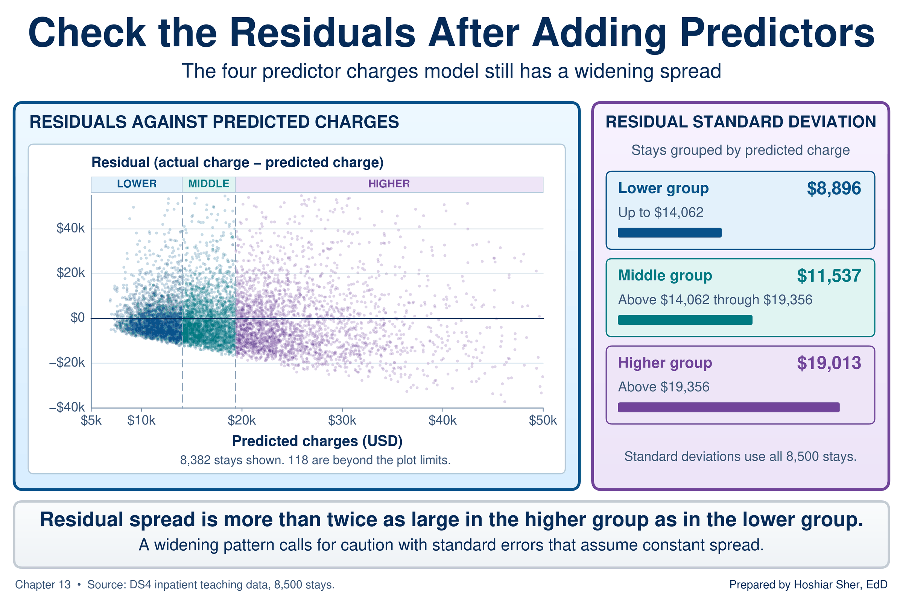

Multiple Linear Regression and Holding Factors Constant
Opening scenario
The financial analyst at Riverbend Health System presents Chapter 12’s result to the chief financial officer (CFO): across 8,500 inpatient stays, each additional day is associated with about $2,132 more in charges. The CFO asks a follow-up question. Long stays more often include time in the intensive care unit (ICU) or a surgical procedure, and both of those carry high charges of their own. How does the per-day figure change once ICU care and surgery are taken into account?
Table 1 shows why the question matters. The analyst groups the stays by whether they included ICU care and whether they included surgery. Stays with neither average 5.27 days and $16,415 in charges. Stays with both average 7.45 days and $29,344. Length of stay, ICU care, and surgery rise together, so a line fitted to length of stay alone cannot separate them.
| ICU care | Surgery | Stays | Average length of stay (days) | Average charges |
|---|---|---|---|---|
| No | No | 6,333 | 5.27 | $16,414.81 |
| No | Yes | 1,194 | 6.19 | $21,960.70 |
| Yes | No | 760 | 6.56 | $24,180.53 |
| Yes | Yes | 213 | 7.45 | $29,344.12 |
This chapter extends Chapter 12’s line to several explanatory variables at once. The result, a multiple linear regression, reports the association of each variable with charges while the others are held constant. The walkthrough answers the CFO’s question, and the Real World box returns to what the answer can and cannot show.
By the end of this chapter, you will be able to:
- Write a multiple linear regression equation and use it to calculate a predicted value.
- Fit a multiple regression in Excel with the
LINESTfunction and interpret each coefficient with the other explanatory variables held constant. - Represent yes-or-no and multi-level categories with indicator variables measured against a reference category.
- Explain why a coefficient changes when another explanatory variable enters the model, and why adjustment does not establish cause.
- Judge whether an added explanatory variable improves a model, using standard errors, 95 percent confidence intervals, and adjusted R-squared.
Key concepts
A multiple regression asks a narrower question than a simple one: among stays that are alike on the other explanatory variables in the model, how does the response differ with this one? Every coefficient is read with that condition attached.
The subsections below build what the walkthrough needs in order: the
equation, how to read a coefficient, indicator variables for two and for
more levels, why coefficients change, and the precision of each
coefficient. The last two, on judging added variables and on Excel’s
LINEST function, prepare you to evaluate the model and to
fit it.
The examples use three of the book’s synthetic teaching files. As in
Chapter 12, the DS prefix numbers the operational datasets
from the fictional Riverbend Health System, and the PH
prefix numbers its public health datasets. This chapter uses
DS4 (inpatient stays), PH1 (county public
health measures), and DS9 (a small wellness screening
file).
About the teaching data. Every dataset in this book is synthetic, as Chapter 5 explained, so none contains protected health information. Two points from Chapter 12 still apply:
DS4records charges, not costs. Charges are the amounts a hospital bills, and they generally differ from the resources the care consumes. Researchers who need cost estimates convert charges with hospital cost-to-charge ratios, such as those the Healthcare Cost and Utilization Project publishes (Agency for Healthcare Research and Quality [AHRQ], 2026).PH1is not a federal data release. It pairs real county names with synthetic estimates modeled on a national program of county health estimates, so its values describe no actual county.
From one explanatory variable to several
Recall from Chapter 12 that a simple linear regression predicts a response variable, the measure being explained, from one explanatory variable, also called a predictor:
predicted charges = $6,344 + $2,132 × days
A multiple linear regression predicts the response from two or more explanatory variables at once. Its equation adds one term for each variable:
predicted response = intercept + coefficient1 × variable1 + coefficient2 × variable2 + … + coefficientk × variablek
Each number that multiplies a variable is a coefficient. In simple regression the single coefficient was called the slope; with several variables, each has its own coefficient. The letter k stands for the number of explanatory variables. The intercept is still the predicted response when every explanatory variable equals 0, which, as Chapter 12 noted, may lie outside the data: no stay lasts 0 days. As in Chapter 12, Excel finds the coefficients by least squares: the combination that makes the sum of the squared residuals as small as possible (Diez et al., 2019; Schneider et al., 2010).
For the Riverbend stays, the walkthrough fits the model with four explanatory variables:
length_of_stay_days, the length of the stay in days;icu_flag, which is 1 when the patient spent time in the ICU and 0 otherwise;surgery_flag, which is 1 when a surgical procedure was performed during the stay and 0 otherwise;comorbidity_count, the number of comorbidities coded for the stay. A comorbidity is a health condition a patient has in addition to the main reason for the admission, such as diabetes in a patient admitted for pneumonia.
The fitted equation, with coefficients rounded to whole dollars, is:
predicted charges = $5,804 + $2,035 × days + $5,067 × ICU + $3,637 × surgery − $29 × comorbidities
Figure 1 labels each part. To predict a stay’s charges, multiply each coefficient by the stay’s value for that variable and add the results to the intercept. A 5-day stay without ICU care or surgery, with 3 comorbidities, has predicted charges of $5,804 + $2,035 × 5 + $5,067 × 0 + $3,637 × 0 − $29 × 3 = $15,892. (With the unrounded coefficients Excel calculates, the prediction is $15,893.77.)

Multiple linear regression fits predicted response = intercept + coefficient1 × variable1 + … + coefficientk × variablek by least squares. Each coefficient is the change in the predicted response for a one-unit increase in its variable, with the other explanatory variables in the model held constant.
Reading a coefficient: holding the other variables constant
The phrase holding the other variables constant carries the meaning of every coefficient. Consider two stays that are identical in length, surgery, and comorbidities, but differ in one respect: one included ICU care and the other did not. The model predicts charges $5,067 higher for the ICU stay. That is the ICU coefficient: the difference in predicted charges between stays that differ in ICU care and are alike on every other variable in the model (Gelman et al., 2020).
Each coefficient follows the same pattern:
- Length of stay, $2,035: among stays alike in ICU care, surgery, and comorbidities, each additional day is associated with about $2,035 more in predicted charges.
- ICU care, $5,067: among stays alike in length, surgery, and comorbidities, a stay with ICU care is associated with about $5,067 more in predicted charges.
- Surgery, $3,637: among stays alike in length, ICU care, and comorbidities, a surgical stay is associated with about $3,637 more in predicted charges.
- Comorbidities, −$29: among stays alike in length, ICU care, and surgery, each additional coded comorbidity is associated with about $29 less in predicted charges, an amount the chapter shows below to be indistinguishable from zero.
Figure 2 draws what holding constant means for ICU care. With surgery and comorbidities fixed, the model draws one line for stays without ICU care and another for stays with it. Both lines rise by the same $2,035 per day, and the ICU line sits $5,067 higher at every length of stay.

“Holding constant” describes a comparison the model makes on paper, not something anyone did to patients. No stay was made one day longer while everything else stayed fixed. The coefficient compares stays that already differed, and it holds constant only the variables in the model. Severity of illness, the physician’s practice pattern, and every other factor not in the model are not held constant.
Calculate predicted charges by hand from the rounded equation above, predicted charges = $5,804 + $2,035 × days + $5,067 × ICU + $3,637 × surgery − $29 × comorbidities.
- Calculate the predicted charges for a 3-day surgical stay without ICU care, with 2 comorbidities.
- Calculate the predicted charges for the same stay with ICU care.
- Subtract the first prediction from the second, and explain in one sentence why the difference does not depend on the length of the stay.
The answer key is at the end of the chapter.
Indicator variables for yes-or-no factors
A regression multiplies each variable by a number, so every
explanatory variable must be numeric. A yes-or-no factor such as ICU
care becomes numeric through an indicator variable,
also called a dummy variable: a column that holds 1
when the condition is present and 0 when it is absent. Recall from
Chapter 4 that a 0/1 flag records a category with numbers. The
icu_flag and surgery_flag columns are already
indicator variables, so the model can use them as they are.
An indicator’s coefficient has a direct reading. Because the variable can change only from 0 to 1, its coefficient is the difference in the predicted response between the two groups, with the other variables held constant (James et al., 2021). The group coded 0, here stays without ICU care, is the comparison group.
Categories with more than two levels
Many healthcare categories have more than two levels. Admission type in the Riverbend file has three: Elective (planned in advance), Urgent (unplanned, for a condition that needs prompt care), and Emergent (unplanned, for a condition that needs immediate care). Typing the values 1, 2, and 3 into one column would tell the model that urgent sits exactly halfway between elective and emergent, which the categories do not imply. Instead, the analyst chooses one level as the reference category and creates one indicator for each of the other levels.
For admission type, with Elective as the reference category:
emergentis 1 for an emergent admission and 0 otherwise;urgentis 1 for an urgent admission and 0 otherwise;- an elective admission has 0 in both columns, so it needs no column of its own.
Figure 3 shows the coding for three stays. A category with m levels
needs m − 1 indicators; the letter m is used here so that k can keep its
meaning as the number of explanatory variables. Adding a third column
for Elective would repeat information the other two already hold,
because any stay with 0 in both is elective. A least-squares model
cannot separate columns that repeat each other exactly;
LINEST detects the redundant column and reports 0 for its
coefficient and standard error (Microsoft, n.d.-c). This error is known
as the indicator-variable trap, often called the
dummy-variable trap.

Each indicator’s coefficient compares its level with the reference category, holding the other variables constant. The choice of reference category changes how the coefficients read but not the model’s predictions. A common choice is the largest group or the group that forms the natural comparison, such as elective admissions for a question about unplanned stays.
An IF formula, from Chapter 6, creates an indicator in a
calculated column of a Table:
=IF([@admission_type]="Emergent", 1, 0) returns
1 for an emergent admission and 0 otherwise.
The text in quotation marks must match the category’s spelling and
spacing in the data. This comparison ignores capitalization, so
"emergent" and "Emergent" give the same
result.
Why coefficients change: confounding and adjustment
When length of stay was the only explanatory variable, its coefficient was $2,132. With ICU care, surgery, and comorbidities added, it is $2,035. The data did not change; the question did.
Recall from Chapter 4 that a confounder is a factor related to both the explanatory variable and the response that is not on the causal pathway between them, so that it can create or distort an association. Chapter 12 used the regression term confounding variable for the same idea. Table 1 shows that ICU care and surgery are related to both length of stay and charges, so they are candidate confounders of the per-day association.
Including a variable in the model is called adjustment: the coefficients of the other variables are then read with that variable held constant (Schneider et al., 2010). Figure 4 shows the idea. In the simple model, part of the higher charges associated with ICU care and surgery is credited to length of stay, because long stays more often include them. In the multiple model, ICU care and surgery receive their own coefficients, and the per-day coefficient describes the association of length of stay with charges among stays alike on the included variables.
![Figure 4: Why the per-day coefficient changes. With length of stay as the only explanatory variable, its coefficient, $2,132, also absorbs part of the higher charges of ICU and surgical stays, which tend to be longer. With ICU care, surgery, and comorbidities in the model, the per-day coefficient is $2,035, and ICU care and surgery have coefficients of $5,067 and $3,637. ICU stays average 6.76 days, compared with 5.41 days for other stays. Source: datasets/DS4_inpatient_clean.csv, 8,500 stays admitted January 2024 to December 2025.](figures/generated/ch_13_confounding.png)
Figure 5 compares each variable’s coefficient fitted alone with its coefficient in the four-variable model. The per-day coefficient changes little, from $2,132 to $2,035. The ICU coefficient falls from $8,016 to $5,067, because ICU stays are longer and more often surgical, and part of their higher charges is associated with those features. The surgery coefficient falls from $5,832 to $3,637 for the same reason. The comorbidity coefficient moves from $284 to −$29: once length, ICU care, and surgery are known, the count of coded comorbidities adds almost nothing to the prediction.

A coefficient that changes when another variable enters the model is not an error. The two coefficients answer different questions: the simple one compares all stays, and the adjusted one compares stays alike on the other variables.
Adjustment has limits that matter as much as its results.
- It holds constant only what is measured and
included. Chapter 12 anticipated holding severity of illness
constant. The inpatient file’s closest measure is
risk_score, a clinical risk score in which higher values indicate higher risk. Adding it to the model moves the per-day coefficient only from $2,035 to $2,038, and its own coefficient, about −$28 per point (standard error $16), cannot be distinguished from zero. One summary score captures severity only partly, so part of the per-day coefficient may still reflect severity that no column records (Hernán, 2018). - It does not turn an association into a cause. An adjusted coefficient from observational data, recorded as care happened rather than in an experiment, still compares stays that differed.
- Each coefficient answers its own question. The ICU coefficient is adjusted for length of stay, but length of stay may itself be partly a consequence of ICU care. Reading every coefficient in a table as a cause of the same kind is a recognized error, sometimes called the Table 2 fallacy after the table in which such results are usually reported (Westreich & Greenland, 2013).
How precise is each coefficient?
The next two subsections address how much to trust the coefficients and when to add a variable. Recall from Chapter 10 that an estimate from data is one result among many that similar data could have produced, and that its standard error measures how much it would vary. Each regression coefficient has its own standard error. A 95 percent confidence interval for a coefficient is built the same way as in Chapter 10:
coefficient ± 1.96 × standard error
With many observations, as here, this is a close approximation to the interval that statistical software reports. Table 2 gives the intervals for the four-variable model. The per-day coefficient, $2,035, has a standard error of $44, so its interval runs from $1,949 to $2,121. The comorbidity coefficient, −$29, has a standard error of $75, so its interval runs from −$175 to $117 and includes zero. The data are consistent with a small negative association, no association, or a small positive one, so the sign of −$29 should not be interpreted (Bzovsky et al., 2022).
| Explanatory variable | Coefficient | Standard error | 95 percent confidence interval |
|---|---|---|---|
| Length of stay (per day) | $2,035.29 | $43.97 | $1,949.11 to $2,121.48 |
| ICU care (1 = yes) | $5,067.45 | $475.21 | $4,136.03 to $5,998.86 |
| Surgery (1 = yes) | $3,636.81 | $406.17 | $2,840.70 to $4,432.91 |
| Comorbidities (per condition) | −$29.06 | $74.63 | −$175.33 to $117.21 |
Figure 6 draws the same intervals. The three intervals that lie entirely above zero describe associations that remain clearly above zero even with the alternative intervals described in the caution below. The interval for comorbidities, in amber, crosses zero.
![Figure 6: Coefficients of the inpatient charges model, each with its 95 percent confidence interval, holding the other three constant. The intervals for length of stay, ICU care, and surgery lie above zero; the length of stay interval is too narrow to see at this scale. The panel at right enlarges the comorbidity interval, −$175 to $117, which includes zero. The intervals use the conventional standard errors from LINEST. Source: datasets/DS4_inpatient_clean.csv, 8,500 stays admitted January 2024 to December 2025.](figures/generated/ch_13_coefficients.png)
The standard errors that LINEST reports assume that the
residuals have a similar spread at every level of the prediction (Diez
et al., 2019). Chapter 12’s residual plot for charges showed a fan, with
spread growing as predicted charges rise, and the multiple model shares
that pattern. A large sample does not correct this. The coefficients
remain valid summaries, but the conventional standard errors, intervals,
and p-values can be unreliable; depending on the data, they may
overstate or understate the uncertainty.
- Spread-adjusted standard errors (also called heteroskedasticity-consistent standard errors, often labeled HC1 in statistical software) allow the spread to vary. They give wider intervals here for the three large coefficients: about $1,906 to $2,164 for length of stay, $3,857 to $6,278 for ICU care, and $2,729 to $4,545 for surgery. The comorbidity interval is nearly unchanged, about −$173 to $115.
- The conclusions in this chapter do not change: the same three intervals exclude zero, and the comorbidity interval includes it.
- Repeated patients. The 8,500 stays come from 5,688 patients, and 2,013 of them have more than one stay. Stays of the same patient may resemble each other, which conventional standard errors also ignore. Patient-clustered standard errors, which allow for that, give nearly the same intervals here as the spread-adjusted ones; the chapter does not teach their calculation.
- Treat the intervals in this chapter as a teaching illustration of the calculation for these data, not as final estimates. The Going Deeper box at the end of Chapter 12 described another remedy, modeling the logarithm of charges.
Does adding a variable help?
Adding an explanatory variable never lowers R-squared, the share of variation the model accounts for, which Chapter 12 introduced. Even a variable unrelated to the response picks up a little chance variation in the sample at hand. R-squared therefore cannot show on its own whether an added variable belongs in the model.
Adjusted R-squared applies a penalty for each explanatory variable. It rises only when an added variable reduces the unexplained variation by enough to offset that penalty, and falls otherwise (Diez et al., 2019). A rise is a useful signal, not a proof: it does not show that a model will predict new data better.
adjusted R-squared = 1 − (1 − R-squared) × (n − 1) ÷ (n − k − 1)
Here n is the number of observations, such as stays, and k is the number of explanatory variables. With 8,500 stays and 4 variables, the adjustment is tiny: R-squared is 0.2364 and adjusted R-squared is 0.2360. With few observations and many variables, it can be large.
Figure 7 shows the difference in the wellness screening file, which holds 100 adults. The response is systolic blood pressure, the upper number of a blood pressure reading. Age alone gives an R-squared of 0.248. Adding body mass index (BMI), a measure of weight relative to height, raises it to 0.282. Each further variable raises R-squared a little, to 0.287 with seven variables, while adjusted R-squared peaks at 0.267 with age and BMI and then falls to 0.233.
Birth month is included deliberately as a variable with no expected relationship to blood pressure. Entering it as a number from 1 to 12 treats the months as evenly spaced points on a line, which suits this demonstration but would not suit a real analysis of seasonal patterns.
![Figure 7: R-squared and adjusted R-squared for models of systolic blood pressure as explanatory variables are added one at a time, left to right: age, BMI, waist circumference, birth month, height, weekly exercise hours, and high-density lipoprotein (HDL) cholesterol. R-squared rises from 0.282 to 0.287 between the age and BMI model and the seven-variable model, while adjusted R-squared falls from 0.267, its highest value, to 0.233. The vertical axis begins at 0.22 to show the changes. Source: datasets/DS9_wellness_screening.csv, 100 adults.](figures/generated/ch_13_adjusted_r2.png)
Here, adjusted R-squared falls after age and BMI, so the later variables do not add enough fit to offset the penalty. That pattern raises the concern of overfitting: a model that fits the chance features of one sample so closely that it predicts new data less well than a simpler model would (Babyak, 2004). Confirming overfitting requires testing the model’s predictions on observations not used to fit it.
Overfitting is most likely when the data hold few observations for each coefficient estimated. Methodologists recommend calculating the sample size a model requires before fitting it, rather than relying on simple rules of thumb (Riley et al., 2020). The 100 wellness records support only a few explanatory variables; the 8,500 stays support more.
A second problem arises when two explanatory variables carry nearly
the same information. In the wellness file, BMI and waist circumference
have a correlation of r = 0.93. Adding waist to a model
that already holds age and BMI raises R-squared only from 0.2816 to
0.2825, and the standard error of the BMI coefficient grows from 0.24 to
0.65. When explanatory variables are strongly correlated with one
another, a condition called multicollinearity, the
model cannot divide their shared association reliably between them, and
their individual coefficients become imprecise and unstable (Kim, 2019).
Waist’s coefficient in that model is even negative, −0.14, though the
two measures each rise with blood pressure.
Figure 8 shows the overlap and its effect on the BMI coefficient.

Figure 9 collects these considerations into four questions to ask before adding a variable.

Add an explanatory variable because the question requires it, such as a likely confounder, not to raise R-squared. A variable that repeats another, or a model with few observations per coefficient, makes the coefficients less trustworthy.
Fitting the model in Excel: LINEST
Chapter 12’s SLOPE and INTERCEPT functions
accept only one explanatory variable. Excel’s
LINEST function fits a least-squares model
with one or several (Microsoft, n.d.-c). Its form is:
=LINEST(known_y's, known_x's, const, stats)
- known_y’s is the response column.
- known_x’s is the block of explanatory columns. The columns must sit side by side, with no other columns between them.
- const is
TRUEto calculate the intercept normally. - stats is
TRUEto return the standard errors and other statistics as well as the coefficients.
LINEST returns a block of results rather than one value.
In Excel for Microsoft 365, Excel 2021, and Excel 2024, you enter it in
one cell and the results spill into the neighboring
cells, the dynamic array behavior Chapter 3 introduced (Microsoft,
n.d.-a). With stats set to TRUE, the block has
five rows and one column for each explanatory variable plus one for the
intercept. Figure 10 labels the cells.
![Figure 10: What each cell of the LINEST result holds for the four-variable inpatient model. Row 1 holds the coefficients in reverse order of the explanatory columns, with the intercept last; row 2 holds their standard errors; row 3 begins with R-squared and the standard error of the estimate, a summary of the residuals’ spread in dollars, not the standard error of any one coefficient. Rows 4 and 5 hold statistics this chapter does not use, and #N/A fills the cells that LINEST leaves empty. Source: datasets/DS4_inpatient_clean.csv, 8,500 stays admitted January 2024 to December 2025.](figures/generated/ch_13_linest_map.png)
With the inpatient file as a Table named Inpatient, and
four adjacent columns named los, icu,
surgery, and comorbidities:
=LINEST(Inpatient[total_charges_usd], Inpatient[[los]:[comorbidities]], TRUE, TRUE)
spills five rows by five columns. The first row reads
-29.06, 3636.81, 5067.45,
2035.29, 5804.47: comorbidities, surgery, ICU,
length of stay, and the intercept.
Inpatient[[los]:[comorbidities]] refers to every column
from los through comorbidities. To return a
single value instead of the block, wrap LINEST in
INDEX, which returns the value at a given row and column of
a block (Microsoft, n.d.-b):
=INDEX(LINEST(Inpatient[total_charges_usd], Inpatient[[los]:[comorbidities]]), 1, 4)
returns about 2035.29, the value in row 1, column 4.
LINEST lists the coefficients in the
reverse order of the explanatory columns: the last
column’s coefficient comes first, and the intercept comes last. Reading
the block left to right as if it matched the columns attaches each
coefficient to the wrong variable, without any error message. Type a
label above each column of the result, as the walkthrough does, before
you read it.
The Analysis ToolPak’s Regression tool, which Chapter 3 introduced,
also fits multiple regressions, but it is available only in the desktop
versions of Excel; it is not available in Excel for the web (Microsoft,
n.d.-d). LINEST gives the same coefficients and standard
errors, so this chapter uses it throughout. The Going Deeper box
describes the ToolPak’s additional output.
Excel versions. Microsoft’s regression article,
written for the older array-entry method that LINEST once
required, says Excel for the web cannot run LINEST
meaningfully (Microsoft, n.d.-d). Current Excel for the web calculates
LINEST as a dynamic array that spills, and the formulas in
this chapter were tested there in November 2026. If your version shows a
single value where a block is expected, use the INDEX form
above, which returns one value at a time in any version, or complete the
steps in desktop Excel.
Walkthrough: separate the factors associated with inpatient charges
This build answers the CFO’s question. You place four explanatory
columns side by side, fit the model with LINEST, label the
results, calculate confidence intervals and adjusted R-squared, use the
equation to predict charges for two stays, and then add admission type
as a category with three levels.
Before you start: open datasets/DS4_inpatient_clean.csv,
and immediately save a working copy as an Excel workbook so the original
stays untouched. These teaching files hold no real patient information;
real patient data must stay in approved, secure systems. The steps
require Excel for Microsoft 365 (desktop or web), Excel 2021, or Excel
2024.
- Desktop Excel: choose File > Save As, pick Excel Workbook (.xlsx), and enter the file name.
- Excel for the web: upload the CSV file to OneDrive and open it; Excel converts it to a workbook. Click the file name at the top of the window to rename it. Your changes save automatically.
Part A. Set up the data. LINEST needs
the explanatory columns side by side. In the file, they sit in columns
F, M, P, and Q, so
you copy them into four adjacent calculated columns at the right edge of
the Table, without moving the original data. Each new column needs a
header that differs from every existing header, because Excel renames a
duplicate header in a Table.
- Open
datasets/DS4_inpatient_clean.csvin Excel. The file has 8,500 stays in rows 2 to 8501 and 32 columns,AtoAF. - Save a working copy named
ch13_charges_model. Work in this file from here on. - Click any cell inside the data. On the Insert tab, click Table, confirm My table has headers is checked, and click OK.
- On the Table Design tab (named
Table on macOS), set the Table Name to
Inpatient. - Click
AG1, typelos, and press Enter. The Table expands to include columnAG. - In
AG2enter=[@length_of_stay_days]. The formula fills the whole column, andAG2shows4.6. - Click
AH1, typeicu, and press Enter. - In
AH2enter=[@icu_flag].AH2shows0. - Click
AI1, typesurgery, and press Enter. - In
AI2enter=[@surgery_flag].AI2shows0. - Click
AJ1, typecomorbidities, and press Enter. - In
AJ2enter=[@comorbidity_count].AJ2shows6.
Part B. Fit the model.
- Add a new worksheet: click the + beside the sheet
tabs, then double-click the new tab and rename it
Model. - In
A1typeInpatient charges: multiple regression. - In
A3typeStays; inB3enter=COUNT(Inpatient[total_charges_usd]). It shows8500. - In
A4typeExplanatory variables; inB4type4. - Label the result before you create it, in reverse column order: type
comorbiditiesinD2,surgeryinE2,icuinF2,losinG2, andinterceptinH2. - Click
D3and enter=LINEST(Inpatient[total_charges_usd], Inpatient[[los]:[comorbidities]], TRUE, TRUE). The result spills intoD3:H7.D3shows about-29.06,G3about2035.29, andH3about5804.47. The#N/Avalues inF5:H7are expected. If you see#SPILL!instead, a cell inD3:H7is not empty; clear it and the block appears. Compare your block with Figure 10.
Part C. Label the coefficients and calculate their
intervals. Each row of the coefficient table points at one
column of the LINEST block: the coefficient in row 3 and
its standard error in row 4.
- Type the headers
VariableinA9,CoefficientinB9,Standard errorinC9,Lower 95%inD9, andUpper 95%inE9. - Type the variable names
InterceptinA10,Length of stay (days)inA11,ICU stayinA12,SurgeryinA13, andComorbiditiesinA14. - Intercept row: enter
=H3inB10and=H4inC10. They show about5804.47and381.89. - Length of stay row: enter
=G3inB11and=G4inC11. They show about2035.29and43.97. - ICU row: enter
=F3inB12and=F4inC12. They show about5067.45and475.21. - Surgery row: enter
=E3inB13and=E4inC13. They show about3636.81and406.17. - Comorbidities row: enter
=D3inB14and=D4inC14. They show about-29.06and74.63. - In
D10enter=B10-1.96*C10. - In
E10enter=B10+1.96*C10. - Select
D10:E10and drag the fill handle down to row 14.D14shows about-175.33andE14about117.21, the comorbidity interval that includes zero. - In
A16typeR-squared; inB16enter=D5. It shows about0.2364. - In
A17typeAdjusted R-squared; inB17enter=1-(1-B16)*(B3-1)/(B3-B4-1). It shows about0.2360.
Part D. Predict two stays. The predictions use the equation directly, so you can see each term.
- In
A19typePredicted: 5 days, no ICU; inB19enter=B10+B11*5+B12*0+B13*0+B14*3. It shows about15893.77, the prediction for a 5-day stay without ICU care or surgery, with 3 comorbidities. - In
A20typePredicted: 5 days, ICU; inB20enter=B10+B11*5+B12*1+B13*0+B14*3. It shows about20961.22. - In
A21typeDifference; inB21enter=B20-B19. It shows about5067.45, the same as the ICU coefficient inB12: the two stays differ only in ICU care, so they differ by exactly that coefficient.
Part E. Add admission type, a category with three levels. Elective admissions serve as the reference category.
- Return to the data sheet. Click
AK1, typeemergent, and press Enter. - In
AK2enter=IF([@admission_type]="Emergent", 1, 0).AK2shows0, because the first stay is an urgent admission. - Click
AL1, typeurgent, and press Enter. - In
AL2enter=IF([@admission_type]="Urgent", 1, 0).AL2shows1. - On the
Modelsheet, inA23typeAverage charges by admission type. Then typeElectiveinA24,EmergentinA25, andUrgentinA26. - In
B24enter=AVERAGEIFS(Inpatient[total_charges_usd], Inpatient[admission_type], A24). It shows about18160.79. - Drag the fill handle from
B24down toB26. Emergent shows about17993.37and Urgent about18555.84. - Type the labels
urgentinD28,emergentinE28,comorbiditiesinF28,surgeryinG28,icuinH28,losinI28, andinterceptinJ28. - Click
D29and enter=LINEST(Inpatient[total_charges_usd], Inpatient[[los]:[urgent]], TRUE, TRUE). The result spills intoD29:J33.D29shows about392.00(urgent) andE29about451.96(emergent);D30andE30show their standard errors, about406.38and384.03; andD31shows the R-squared, about0.2365.
Part F. Check the residuals. As in Chapter 12, a residual plot checks whether the model’s errors have a similar spread at every level of the prediction.
- Return to the data sheet. Click
AM1, typepredicted_charges, and press Enter. - In
AM2enter=Model!$B$10+Model!$B$11*[@los]+Model!$B$12*[@icu]+Model!$B$13*[@surgery]+Model!$B$14*[@comorbidities].AM2shows about14992.47, the predicted charge for the first stay. - Click
AN1, typeresidual, and press Enter. InAN2enter=[@total_charges_usd]-[@predicted_charges].AN2shows about-6332.89. - Click the column letter
AMand drag toAN. Choose Insert > Charts > Scatter, and title the chartResiduals against predicted charges. - Read the pattern. The points form a fan that widens to the right, as in Chapter 12: in the author’s calculation, the standard deviation (SD) of the residuals is about $8,896 for the third of stays with the lowest predicted charges, $11,537 for the middle third, and $19,013 for the highest third. This is the uneven spread that the caution on standard errors describes. Compare your plot with Figure 11.

Part G. Check and interpret.
- Compare your
Modelsheet with Figure 12. IfB21equals the ICU coefficient inB12, the model and the predictions are connected correctly. Save the workbook.
![Figure 12: The finished Model sheet from this walkthrough: the LINEST block in D3:H7 with labels in row 2, the labeled coefficients with standard errors and 95 percent limits in A9:E14, R-squared and adjusted R-squared in B16:B17, the two predictions and their difference in B19:B21, the average charges by admission type in A23:B26, and the six-variable LINEST block in D29:J33. Values are formatted for print; your sheet may show more decimals in the same cells. Source: datasets/DS4_inpatient_clean.csv, 8,500 stays admitted January 2024 to December 2025.](figures/generated/ch_13_finished_model.png)
The workbook now answers the CFO’s question. Among stays alike in ICU care, surgery, and coded comorbidities, each additional day is associated with about $2,035 more in charges, with a 95 percent confidence interval of $1,949 to $2,121. That is about $96 less than the $2,132 from length of stay alone, so adjustment for the included variables changes the per-day figure only modestly. The comparison does not divide charges into causes. ICU care and surgery have large associations of their own, about $5,067 and $3,637 per stay.
Admission type shows how adjustment can change a comparison. Without adjustment, emergent admissions average about $167 less than elective ones ($17,993.37 compared with $18,160.79). With the other variables held constant, the emergent coefficient is about $452 more. The change in direction is consistent with the different mix of surgery: 23.4 percent of elective stays included surgery, compared with 10.8 percent of emergent stays.
Neither difference is precise, however. The unadjusted difference, −$167.41, has a standard error of $435.40, so its interval runs from about −$1,021 to $686. The adjusted coefficient, $451.96, has a standard error of $384.03, so its interval runs from about −$301 to $1,205. Both include zero, as does the urgent interval. Adjusted R-squared stays at 0.2360 with the two indicators added, so admission type adds little once length, ICU care, and surgery are known.
Figure 13 compares the two estimates and the surgery mix behind the change.
![Figure 13: The difference in predicted charges between emergent and elective admissions, before and after adjustment. Unadjusted, the difference is −$167.41 (95 percent confidence interval −$1,021 to $686); adjusted for length of stay, ICU care, surgery, and comorbidities, it is $451.96 (−$301 to $1,205). Both intervals include zero. At right, 23.4 percent of elective stays and 10.8 percent of emergent stays included surgery. Source: datasets/DS4_inpatient_clean.csv, 8,500 stays admitted January 2024 to December 2025.](figures/generated/ch_13_direction_change.png)
For a budget, the model refines Chapter 12’s figure; it does not yet show what shortening stays would save. The model accounts for about 24 percent of the variation in charges, its conventional standard errors are unreliable because of the fan in the residuals, and it describes charges, not costs.
Use the walkthrough workbook to watch the per-day coefficient change as variables enter the model one group at a time.
- On the
Modelsheet, inA35typeDays coefficient, days and ICU only. - In
B35enter=INDEX(LINEST(Inpatient[total_charges_usd], Inpatient[[los]:[icu]]), 1, 2). Record the value. - In
A36typeICU coefficient, days and ICU only; inB36enter the same formula with1, 1in place of1, 2. Record the value. - Explain why the length of stay coefficient sits in column 2 of this result and the ICU coefficient in column 1.
- Write two sentences that trace the per-day coefficient from $2,132
(alone) to the value in
B35to $2,035 (all four variables), and the ICU coefficient from $8,016 (alone) to the value inB36to $5,067.
The answer key is at the end of the chapter.
Practice on your own
These exercises repeat the walkthrough’s techniques on new questions. Practice A follows the walkthrough’s steps closely with county data. Practice B names the models to fit and gives values to check against, but leaves you to assemble the formulas.
Practice A: county diabetes, physical inactivity, and urban or rural setting
In Chapter 12’s Practice A, a line of the diagnosed diabetes rate on
the obesity rate across counties had a slope of about
0.4523. Here you add physical inactivity and the county’s
urban or rural setting, a category with four levels: Urban
core, Suburban, Small town,
and Rural. Urban core serves as the reference
category.
County rates describe counties, not people. As Chapter 12 explained, reading a county-level association as a statement about individuals is the ecological fallacy. A coefficient here compares counties, holding the county’s other rates and setting constant. The urban or rural labels and the sizes of these coefficients are synthetic as well; they do not describe the real counties, and some labels differ from the counties’ actual settings.
- Open
datasets/PH1_places_county_wide.csvand save a working copy namedch13_counties, as in the walkthrough. - Click any cell inside the data, choose Insert > Table, confirm My table has headers, and click OK.
- On the Table Design tab, set the Table
Name to
Places. The file has 3,143 counties in columnsAtoS. - Click
T1, typeobesity, and press Enter. - In
T2enter=[@obesity_pct].T2shows33.6, the rate for Cleburne County, Alabama. - Click
U1, typeinactivity, and press Enter. - In
U2enter=[@physical_inactivity_pct].U2shows26.8. - Click
V1, typerural, and press Enter. - In
V2enter=IF([@urban_rural_group]="Rural", 1, 0). - Click
W1, typesmall_town, and press Enter. - In
W2enter=IF([@urban_rural_group]="Small town", 1, 0). - Click
X1, typesuburban, and press Enter. - In
X2enter=IF([@urban_rural_group]="Suburban", 1, 0). Cleburne County is an urban core county, soV2,W2, andX2all show0. - Add a worksheet named
Model. InA3typeCounties; inB3enter=COUNT(Places[diagnosed_diabetes_pct]). It shows3143. - Type the labels
inactivityinD2,obesityinE2, andinterceptinF2. - In
D3enter=LINEST(Places[diagnosed_diabetes_pct], Places[[obesity]:[inactivity]], TRUE, TRUE). The obesity coefficient inE3is about0.3557, the inactivity coefficient inD3about0.1928, and the R-squared inD5about0.6394. - Type the labels
suburbaninD10,small_towninE10,ruralinF10,inactivityinG10,obesityinH10, andinterceptinI10. - In
D11enter=LINEST(Places[diagnosed_diabetes_pct], Places[[obesity]:[suburban]], TRUE, TRUE). Check: suburban about-0.8461, small town about-1.4716, rural about-2.5631, inactivity about0.2642, obesity about0.3699, intercept about-2.9245, and R-squared inD13about0.6959. - In
A15typeExplanatory variables; inB15type5. - In
A16typeAdjusted R-squared; inB16enter=1-(1-D13)*(B3-1)/(B3-B15-1). It shows about0.6954. - In
A18typeRural lower 95%; inB18enter=F11-1.96*F12. It shows about-2.78. - In
A19typeRural upper 95%; inB19enter=F11+1.96*F12. It shows about-2.35. - Write three sentences: one that interprets the obesity coefficient
in the final model, one that interprets the rural coefficient, and one
that explains why the obesity coefficient changed from
0.4523in Chapter 12 to0.3557when inactivity was added.
Practice B: when an added variable does not help
Open datasets/DS9_wellness_screening.csv, the file of
100 adults that Chapter 12 introduced, save a working copy named
ch13_wellness, and convert the data to a Table named
Wellness. The response is systolic blood pressure
(systolic_bp, column J), in millimeters of
mercury (mmHg).
Add four calculated columns at the right edge of the Table, in this
order. Their headers begin with x_ so that they differ from
the existing headers:
x_ageinU, with=[@age];x_bmiinV, with=[@bmi];x_waistinW, with=[@waist_cm];x_birth_monthinX, with=[@birth_month].
Then, on a Model sheet, fit three models with
LINEST, with stats set to TRUE,
and calculate adjusted R-squared for each. Each block fills five rows,
so leave at least six rows between blocks to avoid a
#SPILL! error:
- Model 1, age and BMI
(
Wellness[[x_age]:[x_bmi]]): R-squared about0.2816, adjusted R-squared about0.2668; BMI coefficient about0.512with a standard error of about0.241. - Model 2, age, BMI, and waist
(
Wellness[[x_age]:[x_waist]]): R-squared about0.2825, adjusted R-squared about0.2601; BMI coefficient about0.725with a standard error of about0.652, and waist coefficient about-0.138. - Model 3, age, BMI, waist, and birth month
(
Wellness[[x_age]:[x_birth_month]]): R-squared about0.2826, adjusted R-squared about0.2524.
Then calculate the correlation between BMI and waist with
=CORREL(Wellness[x_bmi], Wellness[x_waist]), which returns
about 0.928. Write a short paragraph that names the model
you would report and explains your choice, using adjusted R-squared, the
change in the BMI standard error, and the correlation.
p-values and the Analysis ToolPak. On desktop Excel,
Data > Data Analysis > Regression fits the same
model when the Input X Range covers the adjacent
explanatory columns (Microsoft, n.d.-e). Its output repeats the
coefficients and standard errors from LINEST, reports
adjusted R-squared directly, and adds a 95 percent confidence interval
and a p-value for each coefficient. Each p-value applies Chapter 10’s
reasoning to one coefficient. The test divides the coefficient by its
standard error, and the p-value is the probability of a result at least
that many standard errors from zero if the true coefficient were zero
and the model’s assumptions held. Because those assumptions include even
residual spread, the inpatient p-values share the limitation described
for the intervals. For the four-variable inpatient model, the p-values
for length of stay, ICU care, and surgery are below 0.001, and the
p-value for comorbidities is 0.70, consistent with its interval
including zero. A small p-value shows that an association is
distinguishable from zero, not that it is large or causal.
Measuring multicollinearity. The variance inflation factor (VIF) measures how much a coefficient’s variance, the square of its standard error, is enlarged by the variable’s correlation with the other explanatory variables (Kim, 2019). It equals 1 ÷ (1 − R-squared), where this R-squared comes from regressing that explanatory variable on the others. In the wellness model with age, BMI, and waist, regressing BMI on age and waist gives an R-squared of 0.864, so BMI’s VIF is about 7.3. With age alone beside it, BMI’s VIF is about 1.0. Values above about 5 to 10 are commonly treated as a sign of serious multicollinearity.
Interactions. The model in Figure 2 assumes that ICU
care adds the same amount at every length of stay, which is why its two
lines are parallel. An interaction term, a calculated
column that multiplies two explanatory variables, such as
=[@los]*[@icu], lets the gap change with length of stay
(Gelman et al., 2020). Added to the four-variable model, its coefficient
is about −$278 per day (conventional standard error $120), which would
suggest the ICU gap narrows for longer stays.
With spread-adjusted standard errors, however, the interval runs from about −$666 to $111 and includes zero, so the data do not establish that the gap changes. The ICU coefficient itself becomes about $6,885 in that model, now the gap at a stay of 0 days, which shows why coefficients in a model with interactions are harder to read on their own. Interactions are best added when the question calls for them.
The following is an illustrative scenario that uses the Riverbend teaching data; it does not describe a specific organization. A quality committee receives a report showing that stays on the surgical service average about $5,884 more in charges than stays on the medicine service, and a member proposes reviewing the surgical service’s billing practices. The analyst fits a multiple regression with length of stay, ICU care, and the service lines as indicator variables, with Medicine as the reference category. Holding length of stay and ICU care constant, the surgical service’s coefficient is about $3,724, so about $2,160 of the difference is associated with longer stays and more ICU care. The analyst reports both figures and adds a limit: “The remaining difference compares stays alike in length and ICU care, but it is not evidence about billing practices. Differences in the procedures performed may contribute, but this model does not measure them.” The committee refers the question to the service’s clinical and financial leaders, with the procedures that account for the largest charges as the starting point.
The CFO’s question has a numerical answer, charges. Many healthcare questions have a yes-or-no answer instead, such as whether a patient is readmitted; Chapter 14 introduces the regression model for outcomes of that kind.
- A multiple linear regression predicts a response from several explanatory variables at once: predicted response = intercept + one coefficient × variable term for each variable, fitted by least squares.
- Each coefficient is the change in the predicted response for a one-unit increase in its variable, holding the other explanatory variables in the model constant; it compares observations that already differed, not the effect of changing one variable.
- Indicator variables code a yes-or-no factor as 1 or 0; a category with m levels needs m − 1 indicators, and each coefficient compares its level with the reference category.
- A coefficient changes when a related variable enters the model because adjustment separates overlapping associations; adjustment holds constant only what is measured and does not establish cause.
- Each coefficient has a standard error and a 95 percent confidence interval, coefficient ± 1.96 × standard error. R-squared never falls as variables are added, so adjusted R-squared, the number of observations per coefficient, and correlations among the explanatory variables guide whether a variable belongs.
- Using the rounded walkthrough equation, predicted charges = $5,804 + $2,035 × days + $5,067 × ICU + $3,637 × surgery − $29 × comorbidities, calculate the predicted charges for a 7-day stay that included ICU care and surgery, with 4 comorbidities. Then name each part of the equation you used: the intercept, the coefficients, and the indicator variables.
- Interpret the surgery coefficient, $3,637, in one sentence that includes the phrase “holding the other variables constant.” Then explain why the sentence does not say that performing surgery on a patient adds $3,637 to that patient’s charges.
- The inpatient file’s
service_linecolumn has five levels: Medicine, Surgery, Cardiology, Behavioral Health, and Obstetrics (OB). (a) With Medicine as the reference category, how many indicator columns does a model need, and what values would a medicine stay hold in them? (b) A model of charges on length of stay, ICU care, and the four service-line indicators gives a Cardiology coefficient of about −$51 with a standard error of about $468. Interpret the coefficient, and state what its 95 percent confidence interval shows. - Fitted alone, ICU care has a coefficient of $8,016; in the four-variable model, $5,067. Using Table 1, explain why the coefficient fell, and discuss whether surgery and length of stay each fit the definition of a confounding variable for this comparison. Then name one factor that the four-variable model does not hold constant and that could still affect the ICU coefficient.
- A manager reads the comorbidity coefficient, −$29, and concludes that patients with more comorbidities are slightly less expensive to treat. Using the coefficient’s 95 percent confidence interval from Table 2 and what the data record, write a two-sentence reply.
- A colleague fits the wellness file’s systolic blood pressure on seven explanatory variables and reports that R-squared rose from 0.282 with age and BMI to 0.287 with all seven. Using Figure 7, explain why the rise in R-squared alone does not show that the larger model is preferable, compare the two models’ adjusted R-squared, and state which model you would report.
- In the walkthrough’s Part E, emergent admissions average about $167 less than elective ones without adjustment, but have a coefficient of about $452 more with adjustment. Explain the change using the share of each admission type that included surgery, and explain why neither figure supports a firm conclusion about emergent admissions.
Try It (predictions by hand). (1) $5,804 + $2,035 × 3 + $5,067 × 0 + $3,637 × 1 − $29 × 2 = $5,804 + $6,105 + $0 + $3,637 − $58 = $15,488. (2) With ICU care, $15,488 + $5,067 = $20,555. (3) The difference is $5,067, the ICU coefficient. The two stays have the same values for every other variable, so every other term is identical in both predictions and cancels when one is subtracted from the other; the length of stay therefore does not affect the difference.
Try It (the per-day coefficient in stages). (1–3)
B35 shows about 2072.41 and B36
about 5237.09. (4) LINEST lists coefficients
in reverse order of the explanatory columns; with los first
and icu second, the ICU coefficient comes first and the
length of stay coefficient second. (5) The per-day coefficient falls
from $2,132 alone, to $2,072 with ICU care held constant, to $2,035 with
ICU care, surgery, and comorbidities held constant, so each added
variable takes over a small part of the association previously credited
to length of stay. The ICU coefficient falls from $8,016 alone, to
$5,237 with length of stay held constant, to $5,067 with all four
variables, because ICU stays are longer and more often surgical.
Practice A interpretation. In the final model, a county with an obesity rate 1 percentage point higher has a predicted diagnosed diabetes rate about 0.37 points higher, holding physical inactivity and urban or rural setting constant. Rural counties have predicted diabetes rates about 2.56 points lower than urban core counties with the same obesity and inactivity rates; the 95 percent confidence interval, −2.78 to −2.35, excludes zero.
The obesity coefficient fell from 0.4523 to 0.3557 when inactivity was added because counties with high obesity rates also tend to have high inactivity rates, and part of the association that the simple line credited to obesity is now credited to inactivity. Adding the setting indicators raised R-squared from 0.6394 to 0.6959, and adjusted R-squared rose as well, from 0.6392 to 0.6954, so the improvement exceeds the rise that any added variable produces. As the chapter notes, this does not show that the larger model would predict other counties better. These are synthetic county rates, and the associations describe counties, not individuals.
Practice B interpretation. Report Model 1, age and BMI. Adding waist raised R-squared by less than 0.001, lowered adjusted R-squared from 0.2668 to 0.2601, and nearly tripled the standard error of the BMI coefficient, from 0.241 to 0.652, while giving waist a negative coefficient. BMI and waist have a correlation of 0.928, so they carry nearly the same information, and the model cannot divide their shared association between them: multicollinearity. Adding birth month lowered adjusted R-squared again, to 0.2524, consistent with a variable that has no relationship with blood pressure. An added variable does not always reduce precision; its effect depends on how much variation it explains and how strongly it overlaps with the variables already in the model.
Exercises. Answers to the end-of-chapter exercises are provided to instructors in the instructor answer guide.
- Agency for Healthcare Research and Quality. (2026). Cost-to-charge ratio files. Healthcare Cost and Utilization Project. https://hcup-us.ahrq.gov/db/ccr/costtocharge.jsp
- Babyak, M. A. (2004). What you see may not be what you get: A brief, nontechnical introduction to overfitting in regression-type models. Psychosomatic Medicine, 66(3), 411–421. https://doi.org/10.1097/01.psy.0000127692.23278.a9
- Bzovsky, S., Phillips, M. R., Guymer, R. H., Wykoff, C. C., Thabane, L., Bhandari, M., Chaudhary, V., & R.E.T.I.N.A. Study Group. (2022). The clinician’s guide to interpreting a regression analysis. Eye, 36(9), 1715–1717. https://doi.org/10.1038/s41433-022-01949-z
- Diez, D. M., Çetinkaya-Rundel, M., & Barr, C. D. (2019). OpenIntro statistics (4th ed.). OpenIntro. https://www.openintro.org/book/os/
- Gelman, A., Hill, J., & Vehtari, A. (2020). Regression and other stories. Cambridge University Press. https://doi.org/10.1017/9781139161879
- Hernán, M. A. (2018). The C-word: Scientific euphemisms do not improve causal inference from observational data. American Journal of Public Health, 108(5), 616–619. https://doi.org/10.2105/AJPH.2018.304337
- James, G., Witten, D., Hastie, T., & Tibshirani, R. (2021). An introduction to statistical learning: With applications in R (2nd ed.). Springer. https://doi.org/10.1007/978-1-0716-1418-1
- Kim, J. H. (2019). Multicollinearity and misleading statistical results. Korean Journal of Anesthesiology, 72(6), 558–569. https://doi.org/10.4097/kja.19087
- Microsoft. (n.d.-a). Dynamic array formulas and spilled array behavior. Microsoft Support. https://support.microsoft.com/en-us/excel/dynamic-array-formulas-and-spilled-array-behavior
- Microsoft. (n.d.-b). INDEX function. Microsoft Support. https://support.microsoft.com/en-us/excel/functions/index-function
- Microsoft. (n.d.-c). LINEST function. Microsoft Support. https://support.microsoft.com/en-us/excel/functions/linest-function
- Microsoft. (n.d.-d). Perform a regression analysis. Microsoft Support. https://support.microsoft.com/en-us/excel/perform-a-regression-analysis
- Microsoft. (n.d.-e). Use the Analysis ToolPak to perform complex data analysis. Microsoft Support. https://support.microsoft.com/en-us/excel/use-the-analysis-toolpak-to-perform-complex-data-analysis
- Riley, R. D., Ensor, J., Snell, K. I. E., Harrell, F. E., Jr., Martin, G. P., Reitsma, J. B., Moons, K. G. M., Collins, G., & van Smeden, M. (2020). Calculating the sample size required for developing a clinical prediction model. BMJ, 368, Article m441. https://doi.org/10.1136/bmj.m441
- Schneider, A., Hommel, G., & Blettner, M. (2010). Linear regression analysis: Part 14 of a series on evaluation of scientific publications. Deutsches Ärzteblatt International, 107(44), 776–782. https://doi.org/10.3238/arztebl.2010.0776
- Westreich, D., & Greenland, S. (2013). The Table 2 fallacy: Presenting and interpreting confounder and modifier coefficients. American Journal of Epidemiology, 177(4), 292–298. https://doi.org/10.1093/aje/kws412
- Adjusted R-squared
- A version of R-squared that applies a penalty for each explanatory variable, so that it rises only when an added variable reduces the unexplained variation enough to offset the penalty.
- Adjustment
- Including a variable in a regression so that the other coefficients are read with that variable held constant.
- Coefficient
- In a regression, the number that multiplies an explanatory variable: the change in the predicted response for a one-unit increase in that variable, with the other explanatory variables held constant.
- Comorbidity
- A health condition a patient has in addition to the main reason for an admission or visit.
- Holding the other variables constant
- The condition attached to every coefficient in a multiple regression: the comparison is among observations alike on the other explanatory variables in the model.
- Indicator variable
- A column coded 1 when a condition or category is present and 0 when it is absent, so that a regression can use it; also called a dummy variable.
- Indicator-variable trap
-
The error of including an indicator for every level of a category, which
repeats information the other indicators hold; least squares cannot
estimate a separate coefficient for every level, and Excel’s
LINESTdrops one column, reporting 0 for its coefficient and standard error. - Interaction
- A term, usually the product of two explanatory variables, that lets the association of one variable with the response change with the value of the other.
- LINEST
- An Excel function that fits a least-squares regression with one or more explanatory variables and returns the coefficients, in reverse order of the explanatory columns, with optional standard errors and R-squared.
- Multicollinearity
- Strong correlation among explanatory variables, which makes their individual coefficients imprecise and unstable.
- Multiple linear regression
- A regression that predicts a numerical response from two or more explanatory variables at once, with one coefficient for each.
- Overfitting
- Fitting a model so closely to the chance features of one sample that it predicts new data less well than a simpler model would.
- Patient-clustered standard errors
- Standard errors that allow for similarity among repeated observations of the same patient, such as several stays by one person.
- Predictor
- Another name for an explanatory variable, the variable used to predict or explain the response.
- Reference category
- The level of a category that has no indicator column of its own; each indicator’s coefficient compares its level with this one.
- Spread-adjusted standard errors
- Standard errors calculated in a way that allows the residual spread to differ across observations; also called heteroskedasticity-consistent standard errors.
- Variance inflation factor (VIF)
- A measure of how much a coefficient’s variance is enlarged by that variable’s correlation with the other explanatory variables, calculated as 1 ÷ (1 − R-squared) from regressing the variable on the others.
Cite this chapter
@incollection{sher2026ch13,
author = {Sher, Hoshiar J.},
title = {Multiple Linear Regression and Holding Factors Constant},
booktitle = {Introduction to Healthcare Data Analytics},
year = {2026},
doi = {10.5281/zenodo.23327956},
url = {https://yar177.github.io/intro-to-HDA-site/ch13.html}
}